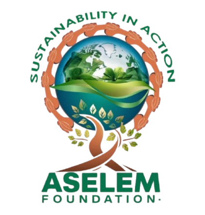
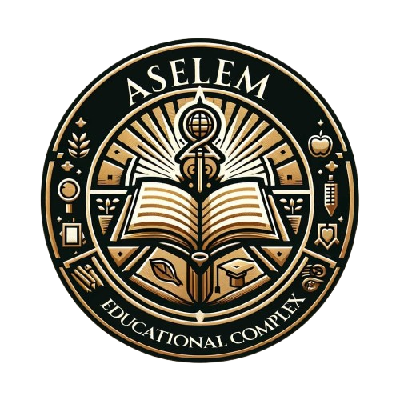

Battle against plastics
Join us in the fight to reclaim our environment, one plastic at a time! It's not too late to cheer us on!
Welcome to Aselem. ASELEM is a beacon of hope and innovation, pioneering a multifaceted approach to addressing some of the most pressing challenges of our times. With a foundation rooted in compassion, sustainability and technological advancement, ASELEM endeavours to forge a future where humanity and the earth coexist in harmony.
Read moreJoin us in the fight to reclaim our environment, one plastic at a time! It's not too late to cheer us on!
FXB Climate Advocates project in Ghana handled by Aselem foundation
Help others to move and grow
Founded on the principles of service, sustainability and social responsibility, ASELEM encompasses a diverse range of initiatives aimed at uplifting communities, preserving the environment, and fostering a sustainable future. Through strategic collaborations and innovative approaches, ASELEM has established itself as a key player in driving positive change across the globe.
To serve as a catalyst for global sustainability and community empowerment.
To address environmental, educational, health, and technological challenges through innovative solutions.
To create a world where every community thrives in harmony with the environment.
To foster an environment empowered by education, health, and access to sustainable technologies.
ASELEM Foundation: Sustainability in Action
Learn moreThe ASELEM Foundation spearheads our environmental conservation efforts, focusing on tree planting, community clean-ups, and public education on waste management. We've introduced sustainable farming practices to hundreds of farmers, enhancing food security and environmental health. Our signage campaign against deforestation and bush burning has marked significant milestones in preserving biodiversity.
ASELEM Innovation Hub (ATIH)
Learn moreATIH leverages cutting-edge technology to solve social challenges, from developing educational apps to creating digital platforms for farmers. Our initiatives are making technology an accessible tool for social good, bridging the digital divide.
ASELEM Health Initiative (AHI)
Learn moreAHI aims to make healthcare accessible to all, deploying mobile clinics, and launching vaccination campaigns in remote areas. Our mental health programs are breaking stigmas and paving the way for a holistic approach to well-being. Deriving our supply from ARES, we can run sustainable healthcare systems without worrying of intermittent power delivery in the nation.
ASELEM Climate Action Network (ACAN)
Learn moreACAN is dedicated to combating climate change through advocacy, research, and community engagement. Our reforestation projects and environmental policy initiatives are laying the groundwork for a more resilient future.
ASELEM Educational Complex: Accessible Quality Education for All
Learn moreBelieving in education as a universal right, the ASELEM Educational Complex provides quality learning experiences to children in underserved communities. Through innovative teaching methods and a curriculum emphasizing critical thinking, we're unlocking the potential of the next generation.
ASELEM Renewable Energy Solutions (ARES)
Learn moreARES is at the forefront of the renewable energy revolution, installing solar panels and wind turbines in communities off the grid. By training locals to maintain these installations, we're creating sustainable job opportunities while reducing carbon footprints. We hope to generate enough energy to ensure our facilities run on a 24/7 basis, with much focus on our health facilities.
ASELEM Water Conservation Corps (AWCC)
Learn moreAddressing the critical issue of water scarcity, AWCC implements sustainable water supply systems and promotes rainwater harvesting. Our educational programs raise awareness about water conservation, ensuring communities can sustainably manage this precious resource.
ASELEM Cultural Preservation Society (ACPS)
Learn moreACPS celebrates and preserves the rich tapestry of cultural heritage, supporting artisans and performers while integrating traditional knowledge with sustainability efforts. Through cultural exchange, we're fostering a global appreciation for diversity and tradition.